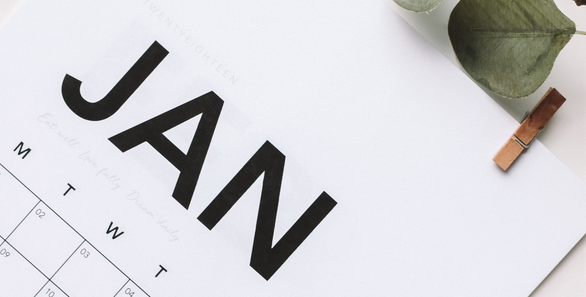

First days
• Content by Mauricio Wolff • Photo by Maddi Bazzocco
So, the experiment has started. First few days, no real surprises.
Few cravings, sometimes I miss fruits. A few nights ago I drank a cup of warm milk, which is outside the protocol. I was sleepy and will use that as an excuse.
I'm a bit more tired than usual, and not so energetic. Sleep is not normal yet... I'm waking up around 3am every night, regardless of the time I go to bed. So I just don't get the phone and close my eyes until I go back to sleep. I read somewhere that this could be lack of carbs, triggering a cortisol spike around 3am. I'm not sure if it's true, though. Will keep the protocol and see what happens after one week.
I remember that when I did keto I had the keto flu for 1.5 weeks, until I woke up one day like nothing happened. So it might be the body adjusting to the new normal.
Eating out
An interesting challenge happened this Saturday, Jan 4th. I was on a shopping trip at Kalverstraat, and it was time to grab a bite. What to do when I'm eating meat, salt and water?
Then I went to Burger King, and found a way to order just the burger patties. I paid €9.95 for a tripple Whopper, but actually only got 5 patties, 3 for me, 2 for Karin. It was good enough. So it is possible to eat out just eating meat.
Electrolytes
One thing I remember from the other time is I had some calf cramps. So to make sure it doesn't happen again, I'm taking electrolytes with water sometimes. In addition to that, I'm also taking Vitamin D, because it's the Netherlands and it's winter.
What about exercise?
I'm going to the gym 5-6 days a week, for about half an hour. I'm not sure if it's enough, but it's better than nothing. Doing 30 minutes of cardio (bike sessions) or lifting weights.
Any physical difference?
I've notice my face is not as bloated as it was in Brazil, probably because I was eating lots of sweets, and basically anything interesting I came across, and drinking less water.
I can see some difference in the belly area, less bloat and more normal for my standards.
I just think I'm still not 100% because I'm still adapting. 2 days for the first week. I'm expecting visible results in around 3 weeks.
Energy sources
Based on my time with keto, you can get energy from fat. There was a day in 2017 that played drums 2h straight, then I ran 5k, and because I still had some energy to disperse, I cycled 10k. I'm eager to have that amount of energy again...
Meanwhile, I'm taking it slow, focusing on the adaptation phase. and getting my priorities done, daily. Health, Family, Work, Diet, Exercise Study, Friendships.